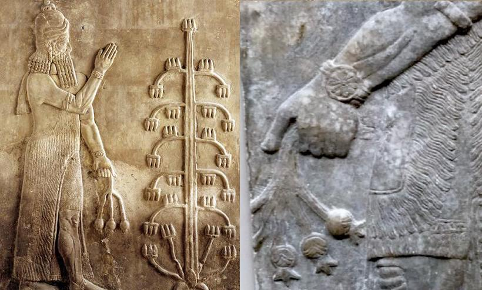

As stated previously opium is a drug that has an extensive, rich history and has been a staple in the ancient cultures of humanity dating as far back as ancient Asia Minor. According to a study conducted by Dr. Aragon-Poce, Sumeria (5000 B.C.) was the first recorded appearance of the opium poppy. Not only were the Sumerians familiar with the poppy but there is evidence the plant was cultivated and became a part of their culture as a recreational drug. (Aragon-Poce 19) For Instance, when Rome conquered Greece (which had long used opium as both a recreational drug and a medical tool by this point) the poppy plant became a crucial component of their culture. Even Emperor Marcus Aurelius used opium to deal with insomnia which occurred as a result of the stress he experienced during military campaigns. It was known at the time that the Emperor was addicted to opium, as outlined in the cited work by Thomas W. Africa ”...the emperor was apparently employing heavier dosages to combat the weather and strain of winter warfare.” (Africa 99) Although opium was historically seen as a phenomenal form of pain relief or a ‘good bit of fun’ early humans were aware the drug was addictive and these days our view of the drug is about the same as that of ancient Rome.
